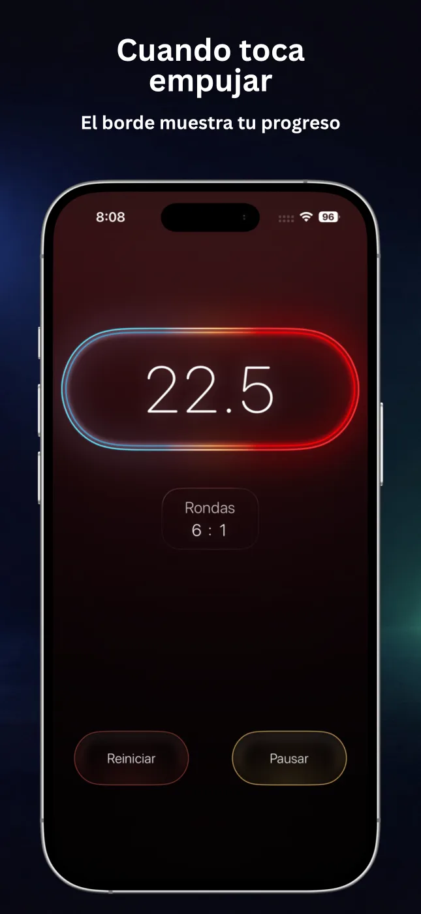
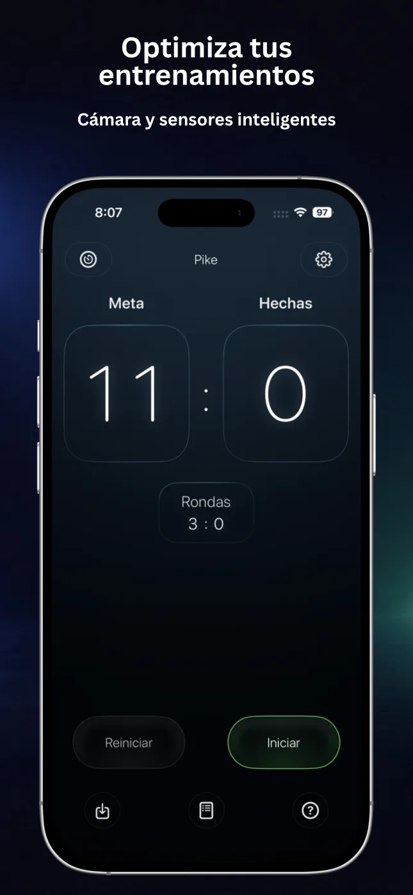
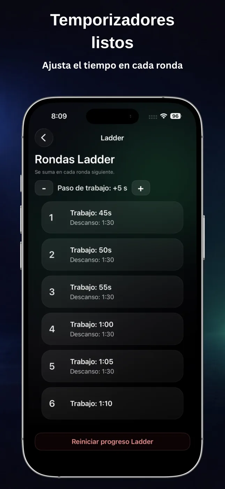
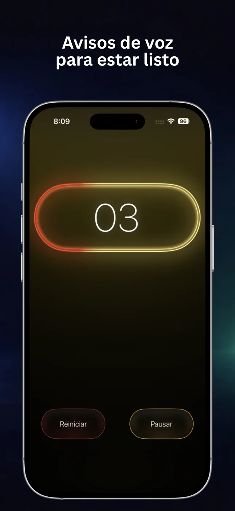
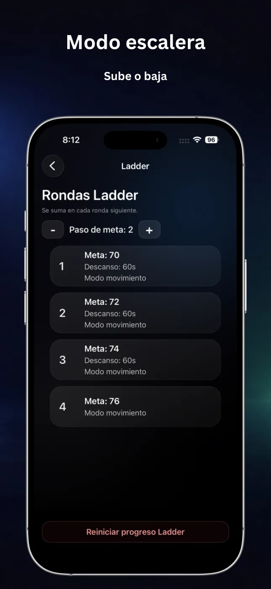
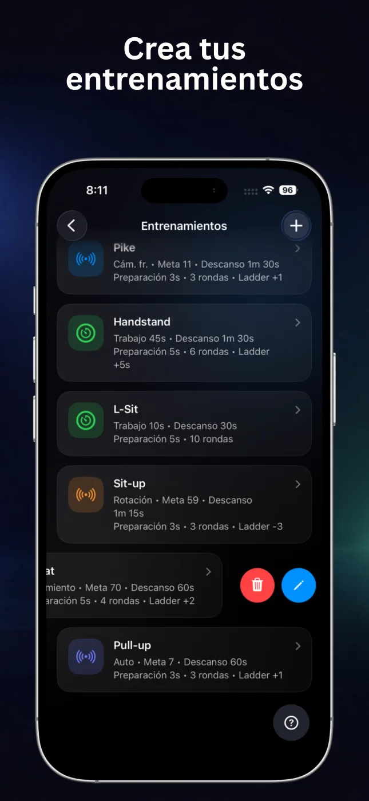

Recuento automático
Usa movimiento, rotación, detección automática o la cámara frontal para contar los ejercicios compatibles.
RepChime combina un temporizador de intervalos preciso con el recuento automático de repeticiones. Configura la sesión, empieza a moverte y deja que el iPhone mantenga el ritmo.

RepChime mantiene visible la estructura del entrenamiento y simplifica los controles, tanto si entrenas por tiempo como por objetivo de repeticiones.
Usa movimiento, rotación, detección automática o la cámara frontal para contar los ejercicios compatibles.
Configura Trabajo, Descanso, Preparación y rondas para circuitos cortos, isométricos o sesiones de intervalos.
Aumenta o reduce el tiempo y los objetivos de repeticiones en cada ronda para progresar con una estructura clara.
No mires la pantalla: sigue los sonidos de cuenta atrás, los avisos de ronda y la guía de voz opcional de RepChime Pro.
Guarda configuraciones de Temporizador y Contador, edita tus favoritas y empieza en pocos toques.
RepChime Pro puede mostrar el tiempo con Actividades en directo en la pantalla bloqueada y Dynamic Island.
Los números grandes, las fases claras y la interfaz oscura se leen fácilmente entre series y a distancia.





Los dos modos siguen el mismo flujo: configura una sesión, pulsa Iniciar y sigue el ritmo visual y sonoro.
Crea sesiones HIIT, de movilidad o isométricas con tiempos separados para Trabajo, Descanso y Preparación. Añade rondas, cuentas atrás y escaleras.
Marca un objetivo y elige detección por movimiento, rotación, automática o cámara frontal. RepChime admite flexiones, abdominales, dominadas y sentadillas.
RepChime mantiene visibles los intervalos y las repeticiones mientras entrenas. Este Short muestra una sesión real de calistenia usando la app.
Workout With My Bro · RepChimeRepChime es una utilidad de fitness para iPhone con un temporizador HIIT configurable y un contador que puede seguir repeticiones compatibles mediante los sensores o la cámara frontal.
La ficha actual del App Store menciona flexiones, abdominales, dominadas y sentadillas. Los modos disponibles varían según el ejercicio; la cámara frontal está disponible para flexiones.
Sí. Puedes guardar rutinas de Temporizador y Contador. RepChime Pro añade más espacios y el flujo de edición completo.
No. Las rutinas y los ajustes están diseñados para permanecer en el dispositivo. Apple gestiona las compras y el estado del acceso.
Configura el entrenamiento una vez. RepChime se ocupa del tiempo, el recuento y los avisos mientras tú te concentras en el movimiento.
Descargar RepChime gratis